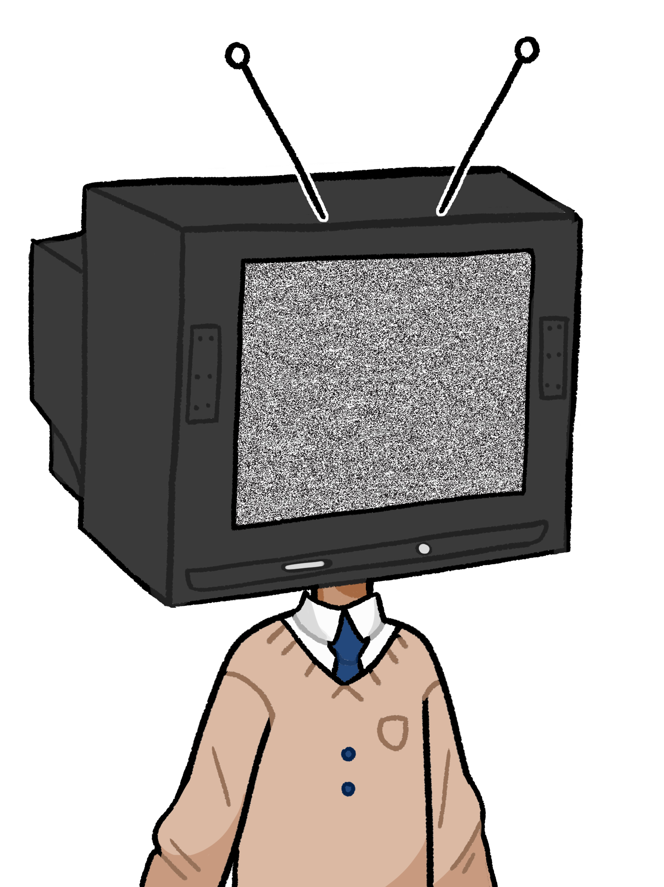

 Moi, Esteban Archbold, je serais le premier président de la VIème République. En tant que tel, mon programme est le suivant…
Pour la première fois depuis longtemps, Léopold, Samy et Ivan regardaient le J.T., affalés dans leur canapé. Les éventements de la veille les avaient épuisés. Ils pensaient sérieusement à partir en vacances, mais où ? Certainement pas en Argentine en tout cas. Ce dimanche après-midi était plat. Ils avaient passé la matinée à creuser des tombes, ils n’avaient pas vraiment la tête à se divertir. Pourtant il fallait faire quelque chose, ils ne pouvaient pas rien faire indéfiniment.
 On est bien d’accord que cette aventure n’avait aucun sens ?
On est bien d’accord que cette aventure n’avait aucun sens ?
 Yep.
Yep.
 Carrément ouais.
Carrément ouais.
Ok, c’était pour être sûr.
Léopold ?
Mmh ?
On baise ?
Ok. On va dans la chambre ?
Osef, pas le temps viens ici !
Eh bah surtout vous gênez pas, faites comme si j’étais pas là…
Tu veux participer ?
Non !
Tu veux qu’on appelle Ambra ?
Crève !
Alors fout nous la paix.
Samy tenta tant bien que mal d’ignorer ce qui se produisait à côté de lui, et de se concentrer sur la télé.
…Ainsi, l’option Science de l’Ingénieur sera retirée pour des raisons de sécurité. Ceux qui la présentait au Baccalauréat sont donc…
Putain les gars y’a plus de S.I. !
Ch’est fouette !
Parle pas la bouche pleine !
Samy jeta un coup d’œil par la fenêtre. Finalement, il aurait dû rester dans le sud… il aurait eu une adolescence normale, et n’aurait jamais côtoyé des gens aussi déconnectés de la réalité… mais au fond, leur côté atypique, qui les rendait si unique, c’est grâce à ça qu’ils étaient si attachants. Est-ce qu’il regrettait vraiment leurs aventures ? Finalement, ils n’étaient pas si débiles que ça, et ça, Samy le savait. Au fond de lui il se sentait bien à leurs côtés, et rien ni personne n’aurait pu le…
Oh putain ça déborde ! Samy fait gaffe à ton jean…
PUTAIN LES GARS !
FIN